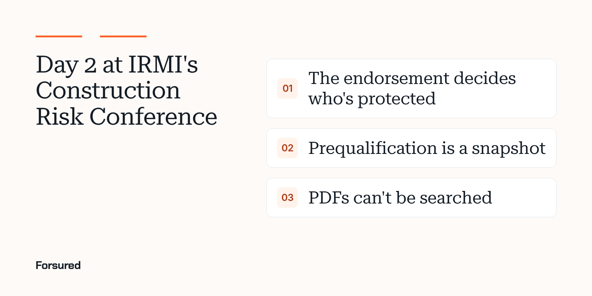

Blog / Event takeaways
Event takeaways3 takeaways from day 2 of IRMI's Construction Risk Conference
The endorsement decides who's protected, prequalification is a snapshot, and insurance data sitting in PDFs is its own kind of risk.

Day 2 at IRMI's Construction Risk Conference is a wrap. Three things we were digging into on Tuesday.
1. The endorsement is the contract's last line of defense
Tuesday opened with "Decoding Additional Insured Endorsements for Successful Contractual Risk Transfer," led by Christopher Ruggiero, partner and construction litigation chair at Cullen and Dykman. His preview made a point every GC should hear: as claim costs rise, the indemnity and additional insured coverage you negotiate is harder to secure, because the endorsement forms keep changing.
The coverage you negotiated only holds if the endorsement on the contractor's policy actually matches your project requirements. A checked box on a COI doesn't tell you that. The form number and its wording do.
2. Prequalification is a snapshot. Insurance is a moving target.
"The Prequalification Puzzle" was on Tuesday's agenda, and it's a good reminder of how much happens after a contractor clears prequal. A contractor COI that passed in March can be out of compliance by July. Policies renew with new terms, lapse for nonpayment and get re-endorsed mid-project.
Prequalification answers "can this firm do the work?" It was never built to answer "is this firm covered today, for this project?"
3. Insurance data you can't search is its own risk
Contractor COIs sitting as PDFs in an inbox can't be trended, audited or shared with your broker or carrier when renewal comes around. "When Data Becomes Risk" was on the afternoon agenda, and that's the version of it we see most: the information exists, but nobody can answer a simple question like "which of our active contractors carry less umbrella than the job requires?"
Structured COI data turns that into a two-minute answer, and it's the same data a carrier wants to see when it asks how you manage the trades you hire.
If you want that answer for one of your own projects, start with one project's requirements and a contractor COI or two.
Get new posts by email.
New posts on contractor COIs and project requirements, plus the coverage gaps we're seeing on real projects. Short and plain.
You're on the list. Thanks for reading.
No spam. Unsubscribe from any email.
Common questions
Why do additional insured endorsements matter more than the certificate?
Additional insured status is created by an endorsement on the contractor's policy. The certificate only reports it. If the endorsement form is narrower than the contract requires, for example covering ongoing but not completed operations, the gap stays even though the certificate looks fine.
Is prequalification enough to manage contractor insurance risk?
No. Prequalification is a point-in-time review. Contractor policies renew, lapse and change during a project, so insurance compliance needs to be rechecked whenever a policy changes and before it expires.
Sources
- Christopher Ruggiero to speak at the 2026 IRMI Construction Risk Conference, Cullen and Dykman
- Certificate of insurance (definition), IRMI
We link to the original reporting and research behind every post. Spotted something we got wrong? Write to hello@forsured.ai and we'll fix it.